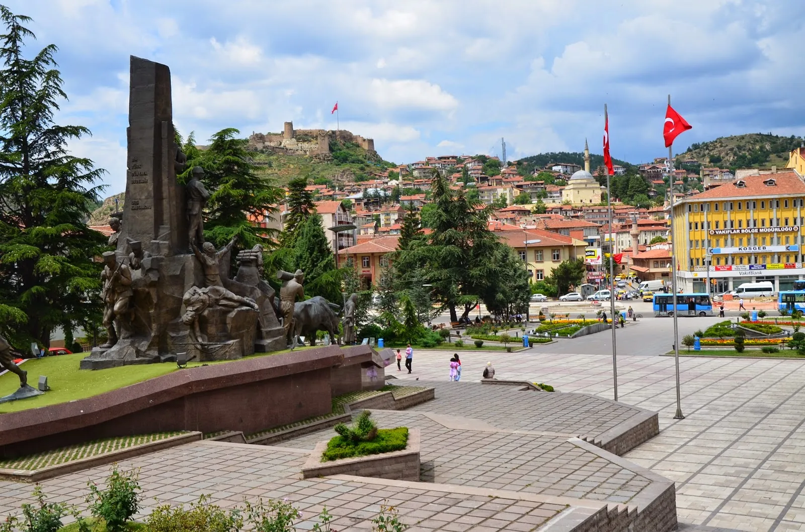

Kastamonu
The city is believed to have been founded in the 18th century BC.
The town was known as Timonion (Τιμόνιον in Greek) during the Roman
period.[citation needed] The change of name of the town dates to the
tenth century AD.
Manuel Erotikos Komnenos, a prominent general and the father of
thebr
Byzantine emperor Isaac I Komnenos, was given lands around Kastamonu
by Emperor Basil II and built a fortress there named Kastra Komnenon
br (Κάστρα Κομνηνῶν). Manuel came to the notice of Basil II because
of his defence, in 978, of Nicaea against the rebel
Skleros.[7] The name Kastra Komnenon was shortened to Kastamone, and
later turkified to Kastamoni and Kastamonu. Ibn Battuta visited the
city, noting it as "one of the largest and finest cities, where
commodities are abundant and prices low." He stayed here forty
days.[8] The famous Sufi saint of the city is Shaykh Shaban Veli
(Şaban-ı Veli in Turkish, d. 976 AH/1569 AD).[9][10] The
Dress Code Revolution of Kemal Atatürk started on August 23, 1925,
at Kastamonu. Atatürk made his historical speech concerning the "Hat
and
Dress Revolution" during his visit to Kastamonu in 1925 in the
Republican People's Party building.[11] The building is now used as
the Archeological Museum of Kastamonu. The possessions used by
Atatürk in his Kastamonu visit are also exhibited in the museum.
Cuisine